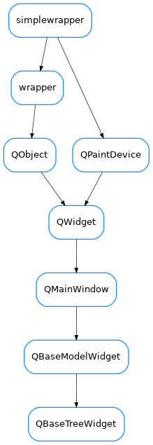

QBaseTreeWidget¶

-
class
QBaseTreeWidget(parent=None, designMode=False, with_navigation_bar=True, with_filter_widget=True, with_selection_widget=True, with_refresh_widget=True, perspective=None, proxy=None)[source]¶ Bases:
taurus.qt.qtgui.model.qbasemodel.QBaseModelWidgetA pure Qt tree widget implementing a tree with a navigation toolbar